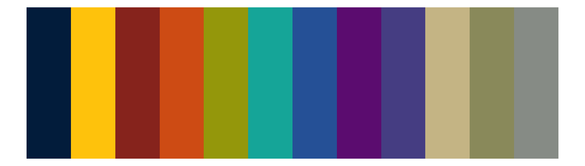
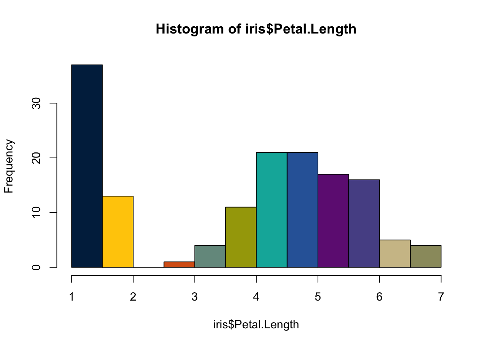
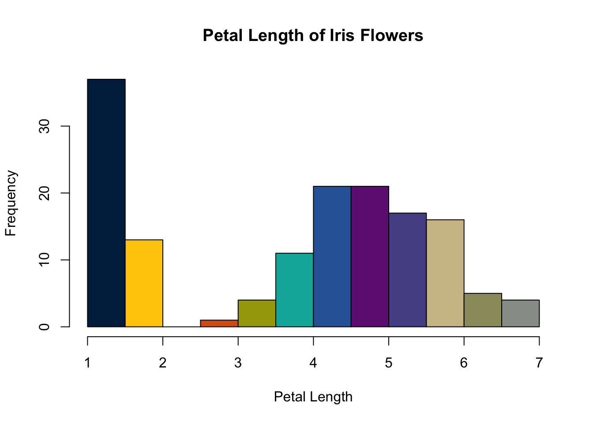
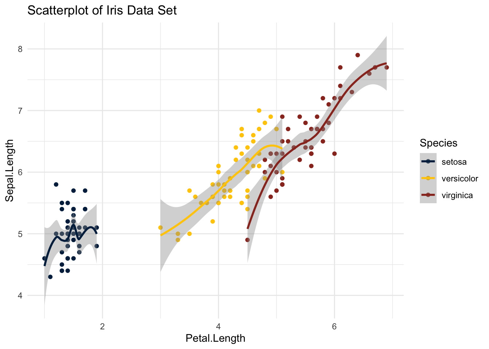
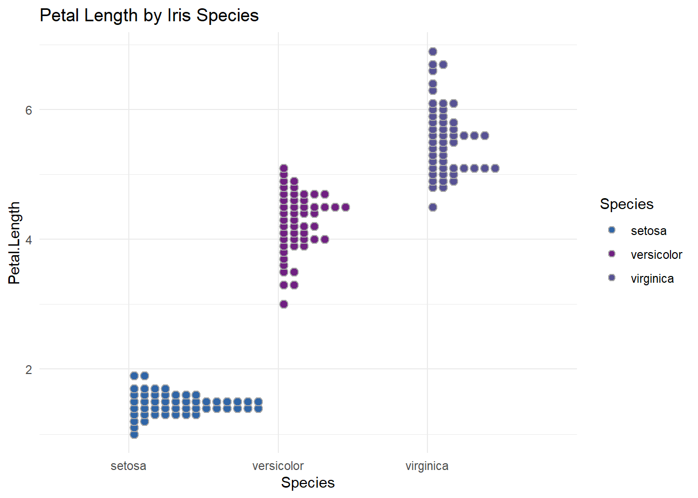

Demonstration of Michigan Colors for R Graphs
1 Installation
You will need to install devtools if you have not already done so:
install.packages("devtools")Then use devtools to install michigancolors.
devtools::install_github("agrogan1/michigancolors")2 Usage
library(michigancolors)3 Allowable Colors
Colors are drawn from https://brand.umich.edu/design-resources/colors/.
Allowable colors are: “blue”, “maize”, “tappan red”, “ross school orange”, “wave field green”, “taubman teal”, “arboretum blue”, “ann arbor amethyst”, “matthaei violet”, “umma tan”, “burton tower beige”, “angell hall ash”, and “law quad stone”
4 Help
help(michigancolors)5 Examples
5.1 Base R
5.1.1 Entire Palette Of Colors
hist(iris$Petal.Length, col = michigancolors())
hist(iris$Petal.Length,
col = michigancolors(),
main = "Petal Length of Iris Flowers",
xlab = "Petal Length")
6 Specific Color
6.1 Base R
hist(iris$Petal.Length, col = michigancolors("matthaei violet"))
plot(iris$Petal.Length,
iris$Sepal.Length,
pch = 19,
col = michigancolors("tappan red"))
6.2 ggplot2
library(ggplot2)6.2.1 Entire Palette Of Colors
ggplot(iris,
aes(x = Petal.Length,
fill = Species)) +
geom_density(alpha = .5) +
labs(title = "Density Plot of Species in Iris Data Set") +
theme_minimal() +
scale_fill_manual(values = michigancolors())ggplot(iris,
aes(x = Petal.Length,
y = Sepal.Length,
color = Species)) +
geom_point() +
geom_smooth() +
labs(title = "Scatterplot of Iris Data Set") +
theme_minimal() +
scale_color_manual(values = michigancolors())
6.2.2 Specific Colors
library(ggdist) # distribution plots
ggplot(iris,
aes(x = Species,
y = Petal.Length,
fill = Species)) +
geom_dots(dotsize = 3) +
labs(title = "Petal Length by Iris Species") +
theme_minimal() +
scale_fill_manual(values = c(michigancolors("arboretum blue"),
michigancolors("ann arbor amethyst"),
michigancolors("matthaei violet")))